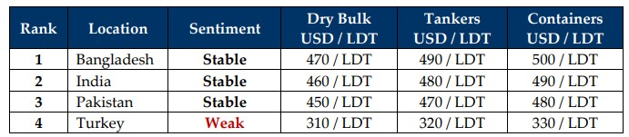

inWeekly Demolition Reports16/12/2024

On the back of news surrounding impending sanctions against Russia & Iran coupled with OPEC’s decision to curtailoil production last week, the markets saw a tightening of oil supplies amidst rising fuel demand, which in turn saw WTI crude oil fixtures surge by about 1.8% by Friday, settling at a firmer USD 71.30 / barrel and marking its highest since early November. As Western nations contemplate the imposition of further sanctions on Russian & Iranian exports / dark fleet tankers, logistics in the wet sector are expected to take a hit in the coming weeks, driving tanker rates higher and further depriving the ship recycling sector of units. In the interim, the Baltic Exchange’s main sea freight index eased for the fourth straight session this Friday, falling close to 0.5%, its lowest since July 2023. This has certainly assisted the ship recycling sector with the supply of tonnage of late, fueling its survival into early 2025.
As we stand on the edge of the final weeks of 2024, compared to the rest of the year, it certainly seems as though there has been more of an uptick in the markets of late, in addition to a far more positive conclusion for ship the recycling sector in the Indian sub-continent, as news of fixtures on the back of firming levels has kept recyclers busy taking deliveries at the various waterfronts over recent weeks. Though the markets are not quite there to breach the coveted USD 500/LDT mark just yet, they have come out of a Q2 – Q3 and even early Q4, when recycling levels were at their lowest this year. Moreover, and pragmatically, rather than attempting to break the next high-priced fixture in the market, ship owners (especially) and even cash buyers need to historically reflect on the fact that these are still very strong prices today.
Meanwhile, unlike the unfolding chess moves from the tanker sector, supply from other sectors is expected to remain steady / likely improve into 2025 and despite trading markets performing impressively as they drive the global fleet to its highest average age it has ever been, increasing newbuild constructions in 2025 should phase out older units faster and ensure a steadier recycling supply. Additionally, despite China’s stimulus announcements promising stronger measures for its economy, Capesize bulkers managed to lose ground even further and all eyes will now be peeled on the Trump’s incoming tariffs that will manifest once he takes office from January 20th, including the tariffs he intends to impose on China, in particular.
In the interim, as global economies continue to find stable footing, the U.S. Dollar strengthens across the recycling board, all whilst local steel plate prices in both China and (consequently) India saw their levels decline in unison this week, further exemplifying the unending problem of cheaper steel being dumped into sub-continent markets, which has seriously afflicted sub-continent steel prices for a majority of the year and despite punitive tariffs being in place. As recycling yards in Bangladesh & (especially) Pakistan remain in limbo, focus should now be on upgrading facilities by June of next year, in time to accede to the Hong Kong Convention. And with most yards in India already compliant, it falls squarely upon regional competitors to undertake improvements, or risk missing out on recycling tonnage entirely. At the far end, Turkey, with all of its legal framework in place for the safe recycling of ships, continues to struggle for tonnage under the weight of its own compulsions. 2025 is gearing up to start with a whimper than the traditional bang.
For Week 50 of 2024, GMS Market Rankings / vessel indications are as below.

📄 Download PDF: Ship-recycling-market-insight-Week-50-12-13-2024-Positive-End.pdfSource: GMS,Inc.https://www.gmsinc.net/gms_new/index.php/web